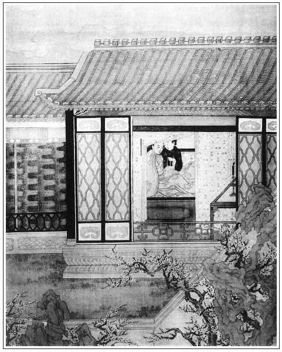

張回上文七十二回內，安郎中送來一盆紅梅、一盆白梅。一盆茉莉、一盆辛夷，看著亦謂閒閒一禮而已；六十回內，紅梅花對白梅花，亦不過閒閒一令而已。不知作者一路隱隱顯顯草蛇灰線寫來，蓋為春梅洗髮，言蓮杏月桂俱已飄零，而瓶斷簪折，琴書俱冷，一段春光，端的總在梅花也。此回乃特筆為春梅一寫。
金蓮與月娘淘氣，而春梅撒嬌，雖禍起春梅，而不為金蓮寫，特為春梅寫，亦花各有時。金蓮，乃一謝時之芰荷，故不如當春之梅萼，是故寫春梅而不寫金蓮也。但為寫春梅，亦有兩樣筆墨。為其將有出頭之日，為春梅計，則守備府中固春梅揚眉吐氣之處，是此處寫其撒嬌，蓋為春梅抬身份也。若雲為西門慶計，則金屋梅花，深注金瓶，一旦瓶墜金井，而梅花亦狼藉東風，眼見為敬濟所揉擰，是此處一寫，又為梅花傷心，且為西門傷心也。故玉簫調裡吹徹江城，瓶已沉矣，而水豈復能溫乎．是用接寫溫秀才之去也。
溫秀才未來之先，寫水秀才，是溫必水之溫也。金瓶水煖，可養梅花，令瓶破而水亦冷矣。梅花自應催折，為敬濟所得也。但溫秀才，即該寫之於瓶兒之初來。不如作者，固言瓶水初溫，而寒甕興悲，蛟龍失水，則玉膽梅花，其芬芳能幾何哉！深悲韶華之迅速，風流之不久也。
葵花乃愛日之花，而「必古」又「屁股」之訛。水性就下，宜乎與夏龍溪私漏消息，而瓶破委泥，是又有倪秀才為葵軒作朋，以同就於污下也。至於愈趨愈下，以至平路成河，水流花謝，紅葉飄零，故葉五兒之女，必嫁夏宅。而何夫人來，賁四嫂必帶水大戰，蓋盡貝葉隨波，又露一段空色消息。是故必於此日先寫一撒漫將落之梅，而接寫溫秀才之去，已是落花流水一段殘春音信，作傷心之話也，故又用畫童哭躲。
喬大戶納官，亦非泛泛。夫言喬者，木也。喬木如拱，已作白楊青草之想。蓋有「聞道白楊堪作柱，怎教紅粉不成灰」二句在內。官者，棺也。喬木成棺，不死安往？
忽放何九、王婆入來。蓋至何家托夢，已結瓶兒。以下皆極力收拾金蓮之筆。故此處將二人一點，使看者知武二處磨刀以待也。卻嫌生入不上，又於前文伏一何千戶，拿一起盜案請問，蓋即伏此脈也。文字針線之妙，無一懈可擊。安得不令人叫絕！
借何十事，即插一宋得原奸丈母事，早為下文金蓮售色，以後至出門等情總提一線也。所云宋得原者，蓋言敬濟直送金蓮出門，以歸根於永福寺。妙絕神理。誰其知此金針之細，如曰「送得遠也」。然則敬濟其結果金蓮之人乎？
「舞裙歌板」一詩，梳櫳桂姐文中已見，今於此回中又一見。蓋桂兒乃秋花，為蓮花零落之期，桂花開處，金蓮已有過時之歎，況此時桂已飄零，後文純是一片雪月世界哉！花不搖而自落矣。是此一詩兩見，終始桂兒，又實終始金蓮。特特一字不易，以作章法，以對下文二八佳人之一絕，作兩第一樣關鎖也。
「舞裙歌板」一詩是財，「二八佳人」一詩是色，故用二見遙遙相對。
因宋得原之名，益知金蓮、敬濟之名貫通之妙。蓋開處則曰金蓮，敗落止餘舊莖，此陳莖芰乃金蓮之下場頭也。是二人乃二而一者矣。
爐鼎乃身之外腎。今送與宋喬年，蓋言此物斷送長年也，安得不死？看他有一句閒言乎？
詩曰：
相勸頻攜金粟杯，莫將閒事系柔懷。
年年只是人依舊，處處何曾花不開？
歌詠且添詩酒興，醉酣還命管弦來。
尊前百事皆如昨，簡點惟無溫秀才。張夾溫氣全無，功名富貴一朝冰冷，故知寫一溫秀才，為結住『熱結』的一個「熱」字，又反轉冷遇一個「冷」字也。

話說西門慶見月娘半日不出去，又親自進來催促，見月娘穿衣裳，方才請任醫官進明間內坐下。繡眉人情之常。少頃，月娘從房內出來，望上道了萬福，慌的任醫官躲在旁邊，屈身還禮。月娘就在對面椅上坐下。張夾瓶兒乃用帳縫中伸手，而月娘則對面坐下。然則寫月娘之不堪，真是不堪。琴童安放桌兒錦茵，月娘向袖口邊伸玉腕，露青蔥，教任醫官診脈。良久診完，月娘又道了個萬福。抽身回房去了。張夾寫月娘真是鄉村老嫗，丑絕不堪，反不如妖淫之瓶兒，尚有三分文氣也。房中小廝拿出茶來。吃畢茶，任醫官說道：「老夫人原來稟的氣血弱，尺脈來的浮澀。雖是胎氣，有些榮衛失調，易生嗔怒，又動了肝火。如今頭目不清，中膈有些阻滯煩悶，四肢之內，血少而氣多。」繡眉明醫。張夾心多而計亦多也。月娘使出琴童來說：「娘如今只是有些頭疼心脹，胳膊發麻，肚腹往下墜著疼，腰酸，吃飲食無味。」張夾即對坐萬福，又必使小廝傳話，寫月娘真是幾多曲折。任醫官道：「我已知道，說得明白了。」西門慶道：「不瞞後溪說，房下如今見懷臨月身孕，張夾著意在此，所以月娘必私自安胎。因著氣惱，不能運轉，滯在胸膈間。望乞老先生留神加減一二，足見厚情。」繡眉是誰之過歟？任醫官道：「豈勞分付，學生無不用心。此去就奉過安胎理氣和中養榮蠲痛之劑來。老夫人服過，要戒氣惱，繡旁此第一著。就厚味也少吃。」西門慶道：「望乞老先生把他這胎氣好生安一安。」張夾著意在此。可知上文為月娘諸般委曲，俱是因此方挾制得動。然則月娘安胎，真是安著矣，反襯掃雪愈知其假。任醫官道：「已定安胎理氣，養其榮衛，不勞分付，學生自有斟酌。」西門慶復說：「學生第三房下有些肚疼，望乞有暖宮丸藥，並見賜些。」任醫官道：「學生謹領，就封過來。」說畢起身，走到前廳院內，見許多教坊樂工伺候，因問：「老翁，今日府上有甚事？」西門慶道：「巡按宋公連兩司官，請巡撫侯石泉老先生，在捨擺酒。」這任醫官聽了，越發駭然尊敬，在前門揖讓上馬，打了恭又打恭，比尋常不同，倍加敬重。張夾寫此，將上文諸人請酒一總襯出，頓住上文，下接出溫秀才，方是熱盡冷來文字逼清如水也。西門慶送他回來，隨即封了一兩銀子，兩方手帕，使琴童騎馬討藥去。
李嬌兒、孟玉樓眾人，都在月娘房裡裝定果盒，搽抹銀器。張夾又反襯金蓮一邊。因說：「大娘，你頭裡還要不出去，怎麼他看了就知道你心中的病？」月娘道：「甚麼好成樣的老婆，由他死便死了罷，可是他說的：『你是我婆婆？無故只是大小之分罷了。我還大他八個月哩，張夾如此爭大，妙絕。漢子疼我，你只好看我一眼兒罷了。』張夾得意語，方知前不憤吹簫文中之妙。他不討了他口裡話，他怎麼和我大嚷大鬧？繡眉揣摹而成，月娘亦有蘇、張之口。若不是你們攛掇我出去，我後十年也不出去。張夾總是一味權術，妙。隨他死，教他死去！常言道：『一雞死，一雞鳴，新來雞兒打鳴忒好聽』。繡眉猛然念及瓶兒。張夾思前想後，既提瓶兒複數金蓮。雖是憤語，又是自己得意安胎有效，此計用得著。與雪夜燒香一樣得意事，故高坐娓娓而談也。我死了，把他立起來，也不亂，也不嚷，才『拔了蘿蔔地皮寬。』」張夾亦是得意語。玉樓道：「大娘，耶樂，耶樂！那裡有此話，俺每就替他賭個大誓。這六姐，不是我說他，有些不知好歹，行事要便勉強，恰似咬群出尖兒的一般，一個大有口沒心的行貨子。繡旁未必。大娘你惱他，可知錯惱了哩。」繡眉玉樓善於說詞。月娘道：「他是比你沒心？張夾卿沒心乎？比他為更有也。他一團兒心機。他怎的會悄悄聽人，行動拿話兒譏諷人。」張夾自翡翠軒至不忿吹簫後，至此惡氣一吐。玉樓道：「娘，你是個當家人，惡水缸兒，不恁大量些，卻怎樣兒的！常言一個君子待了十個小人。繡眉千古格言，不獨為金蓮解釋張夾全是說客語，然自是玉樓身份。你手放高些，他敢過去了；你若與他一般見識起來，他敢過不去。」月娘道：「只有了漢子與他做主兒著，那大老婆且打靠後。」玉樓道：「哄那個哩？張夾一語輸心，直罵月娘。如今像大娘心裡恁不好，他爹敢往那屋裡去麼！」月娘道：「他怎的不去？可是他說的，他屋裡拿豬毛繩子套，他不去？一個漢子的心，如同沒籠頭的馬一般，他要喜歡那一個，只喜歡那個。誰敢攔他攔，他又說是浪了。」繡眉丈夫怒時言語，出口便忘；一到女子，偏偏記得。筆之所至，何所不有？張夾寫月娘與金蓮一樣身份，丑絕月娘矣。玉樓道：「罷麼，大娘，你已是說過，通把氣兒納納兒。等我教他來與娘磕頭，賠個不是。趁著他大妗子在這裡，你們兩個笑開了罷。張夾趁勢即入，可兒可兒。你不然，教他爹兩個裡不作難？就行走也不方便。但要往他屋裡去，又怕你惱；若不去，他又不敢出來。今日前邊恁擺酒，俺們都在這裡定果盒，忙的了不得，他到落得在屋裡躲猾兒。俺每也饒不過他。大妗子，我說的是不是？」張夾可兒可兒，是作者出色寫也。大妗子道：「姑娘，也罷，他三娘也說的是。不爭你兩個話差，只顧不見面，教他姑夫也難，兩下裡都不好行走的。」月娘通一聲也不言語。
孟玉樓抽身往前走。繡旁乖。張夾可兒，可兒。月娘道：「孟三姐，不要叫他去，隨他來不來罷。」玉樓道：「他不敢不來，若不來，我可拿豬毛繩子套了他來。」繡旁趣。繡眉亦自有致。張夾可兒可兒，真正出色。一直走到金蓮房中，見他頭也不梳，把臉黃著，坐在炕上。張夾交將連日金蓮一寫，卻正對前得意殺也。玉樓道：「五姐，你怎的裝憨兒？張夾生氣，乃雲裝憨，真正可兒。此等人真能化有事為無事者。把頭梳起來，今日前邊擺酒，後邊恁忙亂，你也進去走走兒，怎的只顧使性兒起來？剛才如此這般，俺每勸了他這一回。你去到後邊，把惡氣兒揣在懷裡，將出好氣兒來，看怎的張夾妙絕，三字是人生處世妙訣。與他下個禮，賠個不是兒罷。你我既在矮簷下，怎敢不低頭。張夾自己心事，的是看天下本無事者。常言：『甜言美語三冬暖，惡語傷人六月寒』。你兩個已是見過話，只顧使性兒到幾時？人受一口氣，佛受一爐香，你去與他賠個不是兒，天大事都了了。不然，你不教爹兩下裡也難。張夾此一句抵千百句。待要往你這邊來，他又惱。」繡眉此一語足動金蓮。刺心語一兩言便了，千古說法也。張夾此一句又抵千百句。金蓮道：「耶樂，耶樂！我拿甚麼比他？繡旁原是。可是他說的，他是真材實料，正經夫妻，你我都是趁來的露水，能有多大湯水兒？比他的腳指頭兒也比不的兒。」玉樓道：「你又說，我昨日不說的，一棒打三四個人。就是後婚老婆，也不是趁將來的，當初也有個三媒六證，難道只恁就跟了往你家來！砍一枝，損百株，就是六姐惱了你，還有沒惱你的。有勢休要使盡，有話休要說盡。凡事看上顧下，留些兒防後才好。不管蜢蟲、螞蚱，一例都說著。對著他三位師父、郁大姐。人人有面，樹樹有皮，俺每臉上就沒些血兒？張夾為後文別嫁地也。他今日也覺不好意思的。張夾妙人是能處天下事者，其能處在此。只是你不去，卻怎樣兒的？少不的逐日唇不離腮，還有一處兒。你快些把頭梳了，咱兩個一答兒到後邊去。」那潘金蓮見他恁般說，尋思了半日，忍氣吞聲，繡眉可憐英雄失勢時，不知為此四字束縛多少。鏡台前拿過抿鏡，只抿了頭，戴上䯼髻，穿上衣裳，同玉樓徑到後邊上房來。
玉樓掀開簾兒先進去，說道：「大娘，張夾不稱姐姐，妙。我怎的走了去就牽了他來！他不敢不來！」繡眉玉樓戲臉。便道：「我兒，還不過來與你娘磕頭！」張夾妙，真是天下無難事。在旁邊便道：「親家，孩兒年幼，不識好歹，衝撞親家。高抬貴手，將就他罷，饒過這一遭兒。到明日再無禮，繡眉雖謔語，然道著金蓮實病。犯到親家手裡，隨親家打，我老身也不敢說了。」繡旁戲臉。張夾真是天下無難事。那潘金蓮與月娘磕了四個頭，張夾不還一禮，可想。文旁然則還禮才是！跳起來，趕著玉樓打道：「汗邪了你這麻淫婦，你又做我娘來了。」連眾人都笑了，那月娘忍不住也笑了。繡旁好人。張夾一片做作，不覺透露。玉樓道：「賊奴才，你見你主子與了你好臉兒，就抖毛兒打起老娘來了。」張夾總是以遊戲處之，真是處天下事，無一難者也。大妗子道：「你姐妹們笑開，恁歡喜歡喜卻不好？就是俺這姑娘一時間一言半語咭咶你們，大家廝抬廝敬，盡讓一句兒就罷了。常言：『牡丹花兒雖好，還要綠葉扶持。』」月娘道：「他不言語，那個好說他？」金蓮道：「娘是個天，俺每是個地。張夾兩句又嚥住。娘容了俺每，張夾一句又嚥住。俺每骨禿扠著心裡。」張夾一句又嚥住。玉樓打了他肩背一下，說道：「我的兒，你這回才像老娘養的。且休要說嘴，俺每做了這一日活，也該你來助助忙兒。」這金蓮便向炕上與玉樓裝定果盒，不在話下。張夾一番大風波，一時便解。行文真如玉樓為人之妙。
琴童討將藥來，西門慶看了藥貼，就叫送進來與月娘、玉樓。月娘便問玉樓：「你也討藥來？」玉樓道：「還是前日看根兒，下首裡只是有些怪疼，我教他爹對任醫官說，稍帶兩服丸子藥來我吃。」月娘道：「你還是前日空心掉了冷氣了，那裡管下寒的是！」
按下後邊。張夾方知自「不憤」「含酸」一路寫至此方一歇手。夫不憤矣，含酸矣，乃一朝憤不過，酸不過而至於撒潑之後，惟有洗眼看他冷時也。故接一溫秀才之去，為冷熱消息一照。卻說前廳宋御史先到了，西門慶陪他在卷棚內坐。宋御史深謝其爐鼎之事：「學生還當奉價。」西門慶道：「奉送公祖，猶恐見卻，豈敢雲價。」宋御史道：「這等，何以克當？」一面又作揖致謝。茶罷，因說起地方民情風俗一節，西門慶大略可否而答之。張夾宋御史該殺矣。次問及有司官員，繡眉黜陟賢否，朝廷矩典，乃咨及市井之人。甚矣，錢神可畏，而官箴可笑也。張夾寫盡末世誤國之人。西門慶道：「卑職只知本府胡正堂民望素著，李知縣吏事克勤。其餘不知其詳，不敢妄說。」宋御史問道：「守備周秀曾與執事相交，為人卻也好不好？」西門慶道：「周總兵雖歷練老成，張夾臭味不投。還不如濟州荊都監，青年武舉出身，才勇兼備，公祖倒看他看。」宋御史道：「莫不是都監荊忠？執事何以相熟？」西門慶道：「他與我有一面之交，昨日遞了個手本與我，望乞公祖青盼一二。」宋御史道：「我也久聞他是個好將官。」又問其次者，西門慶道：「卑職還有妻兄吳鎧，見任本衙右所正千戶之職。昨日委管修義倉，例該升指揮，亦望公祖提拔，實卑職之沾恩惠也。」宋御史道：「既是令親，到明日類本之時，不但加升本等職級，我還保舉他見任管事。」西門慶連忙作揖謝了，因把荊都監並吳大舅履歷手本遞上。宋御史看了，即令書吏收執，分付：「到明日類本之時，呈行我看。」那吏典收下去了。西門慶又令左右悄悄遞了三兩銀子與他，不在話下。張夾摹盡人情。
正說話間，前廳鼓樂響，左右來報：「兩司老爺都到了。」慌的西門慶即出迎接，到廳上敘禮。這宋御史慢慢才走出花園角門。張夾「慢慢」二字，襯上文接太尉之恭處。眾官見禮畢數，觀看正中擺設大插卓一張，五老定勝方糖，高頂簇盤，甚是齊整，周圍卓席俱豐勝，心中大悅。都望西門慶謝道：「生受，容當奉補。」宋御史道：「分資誠為不足，四泉看我分上罷了，諸公不消奉補。」西門慶道：「豈有此理。」一面各分次序坐下，左右拿上茶來。眾官又一面差官邀去。
看看等到午後，只見一疋報馬來到說：「侯爺來了。」這裡兩邊鼓樂一齊響起，眾官都出大門迎接。宋御史只在二門裡相候。不一時，藍旗馬道過盡，侯巡撫穿大紅孔雀，戴貂鼠暖耳，渾金帶，坐四人大轎，直至門首下轎。眾官迎接進來。宋御史亦換了大紅金雲白豸暖耳，犀角帶，相讓而入。到於大廳上，敘畢禮數，各官廷參畢，然後是西門慶拜見。侯巡撫因前次擺酒請六黃太尉，認得西門慶。即令官吏拿雙紅「友生侯濛」單拜帖，遞與西門慶。西門慶雙手接了，分付家人捧上去。一面參拜畢，寬衣上坐。眾官兩旁僉坐，宋御史居主位。奉畢茶，階下動起樂來。宋御史遞酒簪花，捧上尺頭，隨即抬下卓席來，裝在盒內，差官吏送到公廳去了。然後上坐，獻湯飯，割獻花豬，俱不必細說。先是教坊吊隊舞，撮弄百戲，十分齊整。然後才是海鹽子弟上來磕頭，呈上關目揭帖。侯公分付搬演《裴晉公還帶記》。張夾又是《還帶記》，與請太尉一樣對照，作連環鈕扣章法也。唱了一折下來，又割錦纏羊。端的花簇錦攢，吹彈歌舞，簫韶盈耳，金貂滿座。繡眉亦富麗。有詩為證：
華堂非霧亦非煙，歌遏行雲酒滿筵。
不但紅娥垂玉珮，果然綠鬢插金蟬。
侯巡撫只坐到日西時分，酒過數巡，歌唱兩折下來，令左右拿五兩銀子，分賞廚役、茶酒、樂工、腳下人等，就穿衣起身。眾官俱送出大門，看著上轎而去。回來，宋御史與眾官謝了西門慶，亦告辭而歸。
西門慶送了回來，打發樂工散了。因見天色尚早，分付把卓席休動。一面使小廝請吳大舅並溫秀才、應伯爵、傅夥計、甘夥計、賁第傳、陳敬濟來坐，聽唱。又拿下兩卓酒餚，打發子弟吃了。等的人來，教他唱《四節記（冬景）韓熙載夜宴陶學士》抬出梅花來，放在兩邊卓上，賞梅飲酒。張夾賞已去之梅也。春梅之消息，離家在邇矣。先是三夥計來旁坐下。不一時，溫秀才也過來了，吳大舅、吳二舅、應伯爵都來了。應伯爵與西門慶唱喏：「前日空過眾位嫂子，又多謝重禮。」西門慶笑罵道：「賊天殺的狗材，你打窗戶眼兒內偷瞧的你娘們好！」繡旁應出，趣甚。張夾前本為告訴月娘、春梅之事作寬轉局面，此處又是遮蓋筆墨處，不知又為告張二官說金蓮也。伯爵道：「你休聽人胡說，豈有此理。我想來也沒人。」繡眉無意中卻便供出。指王經道：「就是你這賊狗骨禿兒，乾淨來家就學舌。我到明日把你這小狗骨禿兒肉也咬了。」說畢，吃了茶。
吳大舅要到後邊，西門慶陪下來，向吳大舅如此這般說：「對宋大巡已替大舅說，他看了揭帖，交付書辦收了。我又與了書辦三兩銀子，連荊大人的都放在一處。他親口許下，到明日類本之時，自有意思。」吳大舅聽了，滿心歡喜，連忙與西門慶唱喏：「多累姐夫費心。」西門慶道：「我就說是我妻兄，他說既是令親，我已定見過分上。」於是同到房中，見了月娘。張夾正是要奉承處。月娘與他哥道萬福。大舅向大妗子說道：「你往家去罷了，家裡沒人，如何只顧不去了？」大妗子道：「三姑娘留下，教我過了初三日去哩。」吳大舅道：「既是姑娘留你，到初四日去便了。」說畢，來到前邊，同眾坐下飲酒。不一時，下邊戲子鑼鼓響動，搬演《韓熙載夜宴（郵亭佳遇）》。正在熱鬧處，忽見玳安來說：「喬親家爹那裡，使了喬通在下邊請爹說話。」西門慶隨即下席見喬通。喬通道：「爹說昨日空過親家。爹使我送那援納例銀子來，一封三十兩，另外又拿著五兩與吏房使用。」西門慶道：「我明日早封過與胡大尹，他就與了札付來。又與吏房銀子做甚麼？你還帶回去。」一面分付玳安拿酒飯點心，管待喬通，打發去了。
話休饒舌。當日唱了《郵亭》兩折，有一更時分，西門慶前邊人散了，看收了家火，就進入月娘房來。大妗子正坐的，見西門慶進來，連忙往那邊屋裡去了。張夾寫月娘連日步步用大妗子相伴，真是寫月娘險處。西門慶因向月娘說：「我今日替你哥如此這般對宋巡按說，他許下除加升一級，還教他見任管事，就是指揮僉事。我剛才已對你哥說了，他好不喜歡，只在年終就題本。」月娘便道：「沒的說，他一個窮衛家官兒，那裡有二三百銀子使？」張夾神奸如畫。全是權術，步步算到。西門慶道：「誰問他要一百文錢兒。我就對宋御史說是我妻兄，張夾全是奉承，總是安胎得濟處。他親口既許下，無有個不做分上的。」月娘道：「隨你與他幹，我不管你。」西門慶便問玉簫：「替你娘煎了藥，拿來我瞧著，打發你娘吃了罷。」張夾安胎得濟處。細思亦是燒香為得濟之本，月娘險矣哉！月娘道：「你去，休管他，等我臨睡自家吃。」
那西門慶才待往外走，被月娘又叫回來，問道：「你往那裡去？若是往前頭去，趁早兒不要去。他頭裡與我陪過不是了，只少你與他陪不是去哩。」繡眉金蓮之陪禮為此著也，偏不許去，大煞風景。張夾總是一味挾制。西門慶道：「我不往他屋裡去。」月娘道：「你不往他屋裡去，往誰屋裡去？那前頭媳婦子跟前也省可去。張夾然則一向明知矣，寫月娘無處不算到。惹的他昨日對著大妗子，好不拿話兒咂我，說我縱容著你要他，圖你喜歡哩。你又恁沒廉恥的。」西門慶道：「你理那小淫婦兒怎的！」繡旁罵處多露愛心。張夾解圍語。月娘道：「你只依我說，今日偏不要你往前邊去，也不要你在我這屋裡，你往下邊李嬌姐房裡睡去。隨你明日去不去，我就不管了。」西門慶見恁說，無法可處，張夾寫月娘挾制如畫，已將金蓮冷盡矣。只得往李嬌兒房裡歇了一夜。
到次日，臘月初一日，早往衙門中同何千戶發牌升廳畫卯，發放公文。一早辰才來家，又打點禮物豬酒，並三十兩銀子，差玳安往東平府送胡府尹去。胡府尹收下禮物，即時封過札付來。西門慶在家，請了陰陽徐先生，廳上擺設豬羊酒果，燒紙還願心畢，張夾細。打發徐先生去了。因見玳安到了，看了回帖，札付上面用著許多印信，填寫喬洪本府義官名目。張夾喬木為棺，西門死至。又寓富貴有限，墓木已如拱矣。一面使玳安送兩盒胙肉與喬大戶家，就請喬大戶來吃酒，與他札付瞧。又分送與吳大舅、溫秀才、應伯爵、謝希大並眾夥計，每人都是一盒，不在話下。一面又發帖兒，初三日請周守備、荊都監、張團練、劉、薛二內相、何千戶、范千戶、吳大舅、喬大戶、王三官兒，共十位客，叫一起雜耍樂工，四個唱的。
那日，孟玉樓攢了帳，遞與西門慶，就交代與金蓮管理，他不管了。張夾春光去矣，為之太息。因來問月娘道：「大娘，你昨日吃了藥兒，可好些？」月娘道：「怪不的人說怪浪肉，平白教人家漢子捏了捏手，今日好了。繡眉月娘亦有此妙想。張夾與金蓮一樣身份，丑絕。頭也不疼，心口也不發脹了。」玉樓笑道：「大娘，你原來只少他一捏兒。」連大妗子也笑了。西門慶拿了攢的帳來，又問月娘。月娘道：「該那個管，你交與那個就是了。來問我怎的，誰肯讓的誰？」繡眉想見西門慶百種虛心，月娘一番冷臉，如畫如睹。張夾未釋然金蓮語。這西門慶方打帳兌三十兩銀子，三十弔錢，交與金蓮管理，不在話下。
良久，喬大戶到了。西門慶陪他廳上坐的，如此這般拿胡府尹札付與他看。看見上寫義官喬洪名字：「援例上納白米三十石，以濟邊餉」，滿心歡喜，連忙向西門慶失恭致謝：「多累親家費心，容當叩謝。」繡眉應轉前番，一語作結。因叫喬通：「好生送到家去。」又說：「明日若親家見招，在下有此冠帶，就敢來陪。」張夾可知其不敢來，不敢不來之意。西門慶道：「初三日親家好歹早些下降。」一面喫茶畢，分付琴童，西廂書房裡放卓兒。「親家請那裡坐，還暖些。」同到書房，才坐下，只見應伯爵到了。斂了幾分人情，交與西門慶，說：「此是列位奉賀哥的分資。」西門慶接了，看頭一位就是吳道官，其次應伯爵、謝希大、祝實念、孫寡嘴、常峙節、白賚光、李智、黃四、杜三哥，張夾新添三位。共十分人情。張夾明將十兄弟一總，『熱結』文字一總。蓋頓住「熱」字，下文出脫溫秀才去，方是『熱結』一回已完。溫氣全無，冷事才動頭。但西門冷時，安得一親哥嫂相遇於縣門前也哉。西門慶道：「我這邊還有吳二舅、沈姨夫，門外任醫官、花大哥並三個夥計、溫葵軒，也有二十多人，就在初四日請罷。」一面令左右收進人情去，使琴童兒：「拿馬請你吳大舅來，陪你喬家親爹坐。」因問：「溫師父在家不在？」來安兒道：「溫師父不在家，望朋友去了。」張夾又點一點。不一時，吳大舅來到，連陳敬濟五人共坐，把酒來斟。卓上擺列許多下飯。飲酒中間，西門慶因向吳大舅說：「喬親家恭喜的事，今日已領下札付來了。容日我這裡備禮寫文軸，咱每從府中迎賀迎賀。」喬大戶道：「惶恐，甚大職役，敢起動列位親家費心。」忽有本縣衙差人送歷日來了，共二百五十本。西門慶拿回帖賞賜，打發來人去了。應伯爵道：「新歷日俺每不曾見哩。」西門慶把五十本拆開，與喬大戶、吳大舅、伯爵三人分開。伯爵看了看，開年改了重和元年，該閏正月。張夾記清，為西門死日點睛也。
不說當日席間猜枚行令。飲酒至晚，喬大戶先告家去。張夾是新得官景象。西門慶陪吳大舅、伯爵坐到起更時分方散。分付伴當：「早伺候備馬，邀你何老爹到我這裡起身，同往郊外送侯爺，留下四名排軍，與來安、春鴻兩個，跟大娘轎往夏家去。」說畢，就歸金蓮房中來。張夾直來，是連日放心不下者。那婦人未等他進房，就先摘了冠兒，亂挽烏雲，花容不整，朱粉懶施，渾衣兒歪在床上，張夾不知何故，看金蓮假處，卻使人偏恨月娘之假比金蓮更甚。房內燈兒也不點，靜悄悄的。西門請進來，便叫春梅。不應，只見金蓮睡在床上，叫著只不做聲。張夾婦人技量，人人皆然。獨恨月娘之勝於金蓮也。西門慶便坐在床上問道：「怪小油嘴，你怎的恁個腔兒？」也不答應。被西門慶用手拉起他來，說道：「你如何悻悻的？」那婦人便做出許多喬張致來，把臉扭著，止不住紛紛香腮上滾下淚來。張夾反襯月娘有得挾制處。那西門慶就是鐵石人，也把心腸軟了。繡旁自然。連忙一隻手摟著他脖子說：「怪油嘴，好好兒的，平白你兩個合甚麼氣？」那婦人半日方回說道：「誰和他合氣來？他平白尋起個不是，對著人罵我是攔漢精，趁漢精，繡眉罵得不差。張夾連日止見月娘話滿耳，忽然金蓮發聲，卻便是金蓮的話不是月娘的話，真是妙絕。趁了你來了。他是真材實料，正經夫妻。誰教你又到我這屋裡做甚麼！你守著他去就是了，省的我把攔著你。說你來家，只在我這房裡纏，早是肉身聽著，你這幾夜只在我這屋裡睡來？張夾不憤在此。白眉赤眼兒的嚼舌根。一件皮襖，也說我不問他，擅自就問漢子討了。我是使的奴才丫頭，莫不往你屋裡與你磕頭去？張夾映如意。為這小肉兒罵了那賊瞎淫婦，也說不管，偏有那些聲氣的。你是個男子漢，若是有主張，一拳柱定，那裡有這些閒言帳語。張夾然則如何柱定哉？怪不的俺每自輕自賤，常言道：『賤裡買來賤裡賣，容易得來容易捨。』趁將你家來，與你家做小老婆，不氣長。張夾直將茶房中一提。你看昨日，生怕氣了他，在屋裡守著的是誰？請太醫的是誰？在跟前攛撥侍奉的是誰？苦惱俺每這陰山背後，就死在這屋裡，也沒個人兒來揪問。張夾補連日情事。這個就是出那人的心來了！還教我含著眼淚兒，走到後邊與他賠不是。」繡眉責備件件都是，然又不得不然，丈夫處此，大費調停，欲娶妾者看樣。說著，那桃花臉上止不住又滾下珍珠兒，倒在西門慶懷裡，嗚嗚咽咽，哭的捽鼻涕彈眼淚。張夾金蓮一味軟圈，反襯月娘硬拿生制。西門慶一面摟抱著勸道：「罷麼，我的兒，我連日心中有事，你兩家各省一句兒就罷了。你教我說誰的是？繡旁果然大難。張夾是周旋月娘處語。昨日要來看你，他說我來與你賠不是，不放我來。我往李嬌兒房裡睡了一夜。雖然我和人睡，一片心只想著你。」婦人道：「罷麼，我也見出你那心來了。一味在我面上虛情假意，倒老還疼你那正經夫妻。他如今替你懷著孩子，俺每一根草兒，拿甚麼比他！」張夾金蓮亦自眼明。被西門慶摟過脖子來親了個嘴，道：「小油嘴，休要胡說。」只見秋菊拿進茶來。西門慶便道：「賊奴才，好乾淨兒，如何教他拿茶？」因問：「春梅怎的不見？」婦人道：「你還問春梅哩，他餓的還有一口游氣兒，那屋裡躺著不是。帶今日三四日沒吃點湯水兒了，一心只要尋死在那裡。說他大娘，對著人罵了他奴才，氣生氣死，整哭了三四日了。」這西門慶聽了，說道：「真個？」婦人道：「莫不我哄你不成，你瞧去不是！」
這西門慶慌過這邊屋裡，只見春梅容妝不整，雲髻歪斜，睡在炕上。西門慶叫道：「怪小油嘴，你怎的不起來？」叫著他，只不做聲，推睡。張夾又是一樣葫蘆。被西門慶雙關抱將起來。那春梅從酩子裡伸腰，一個鯉魚打挺，險些兒沒把西門慶掃了一交，張夾是其傲處，如見。早是抱的牢，有護炕倚住不倒。春梅道：「達達，放開了手。你又來理論俺每這奴才做甚麼？也玷辱了你這兩隻手。」繡眉娘兒一派，甚有傳授。西門慶道：「小油嘴兒，你大娘說了你兩句兒罷了，只顧使起性兒來了。說你這兩日沒吃飯？」春梅道：「吃飯不吃飯，你管他怎的！左右是奴才貨兒，死便隨他死了罷。張夾不憤「奴才」二字，直照後文。我做奴才，也沒幹壞了甚麼事，並沒教主子罵我一句兒，打我一下兒，做甚麼為這㒲遍街搗遍巷的賊瞎婦，教大娘這等罵我，嗔俺娘不管我，莫不為瞎淫婦打我五板兒？繡眉遷怒大奇，然婦人女子恆情如此。張夾各人有心中事在。等到明日，韓道國老婆不來便罷，若來，你看我指著他一頓好罵。原來送了這瞎淫婦來，就是個禍根。」張夾反恨所罵之人，妙絕。西門慶道：「就是送了他來，也是好意，張夾深寫為語。誰曉的為他合起氣來。」春梅道：「他若肯放和氣些，我好罵他？他小量人家！」西門慶道：「我來這裡，你還不倒鍾茶兒我吃？那奴才手不乾淨，我不吃他倒的茶。」春梅道：「死了王屠，連毛吃豬。我如今走也走不動在這裡，還教我倒甚麼茶？」西門慶道：「怪小油嘴兒，誰教你不吃些甚麼兒？」因說道：「咱每往那邊屋裡去。我也還沒吃飯哩，教秋菊後邊取菜兒，篩酒，烤果餡餅兒，炊鮮湯咱每吃。」於是不由分訴，拉著春梅手到婦人房內。分付秋菊：「拿盒子後邊取吃飯的菜兒去。」不一時，拿了一方盒菜蔬來。西門慶分付春梅：「把肉鮓拆上幾絲雞肉，加上酸筍韭菜，和成一大碗香噴噴餛飩湯來。」放下卓兒擺上，一面盛飯來。又烤了一盒果餡餅兒。西門慶和金蓮並肩而坐，春梅也在旁陪著同吃。三個你一杯，我一杯，吃到一更方睡。張夾內有許多話在。
到次日，西門慶起早，約會何千戶來到，吃了頭腦酒，起身同往郊外送侯巡撫去了。吳月娘先送禮往夏指揮家去，然後打扮，坐大轎，排軍喝道，來安、春鴻跟隨來吃酒，看他娘子兒，不在話下。
且說玳安、王經看家，將到晌午時分，只見縣前賣茶的王媽媽領著何九，來大門首尋問玳安：「老爹在家不在家？」玳安道：「何老人家、王奶奶張夾武二來算帳矣，故用兩人來，一鬧便散故也。接此一段，見此一鬧，是散場局面也。稀罕，今日那陣風兒吹你老人家來這裡走走？」王婆子道：「沒勾當怎好來踅門踅戶？今日不因老九，為他兄弟的事，要央煩你老爹，老身還不敢來。」玳安道：「老爺今日與侯爺送行去了，俺大娘也不在家。你老人家站站，等我進去對五娘說聲。」進入不多時出來，說道：「俺五娘請你老人家進去哩。」王婆道：「我敢進去？你引我引兒，只怕有狗。」那玳安引他進入花園金蓮房門首，掀開簾子，張夾又映簾子。王婆進去。見婦人家常戴著臥兔兒，張夾映冬日年底也。穿著一身錦段衣裳，搽抹的粉妝玉琢，張夾為毛青大袖衫兒一哭。正在炕上腳登著爐台兒坐的。進去不免下禮，張夾「不免」二字，妙絕。慌的婦人答禮，說道：「老王免了罷。」繡眉口角輕薄。張夾「免了罷」三字又妙。王婆本意免了，所以云「不免」。婦人不想其後曰「不免」，所以云『免了』。那婆子見畢禮，坐在炕邊頭。婦人便問：「怎的一向不見你？」王婆子道：「老身心中常想著娘子，只是不敢來親近。」問：「添了哥哥不曾？」張夾一語便入。婦人道：「有倒好了。小產過兩遍，張夾謊的妙。白不存。」問：「你兒子有了親事來？」張夾為下文作伏。王婆道：「還不曾與他尋。他跟客人淮上來家這一年多，家中積攢了些，買個驢兒，胡亂磨些面兒賣來度日。」因問：「老爹不在家了？」婦人道：「他今日往門外與撫按官送行去了，他大娘也不在家，有甚話說？」王婆道：「何老九有樁事，央及老身來對老爹說：他兄弟何十吃賊攀了，繡眉又應出何九。張夾西門慶獨無兄弟，是可歎也。見拿在提刑院老爹手裡問。攀他是窩主。本等與他無干，望乞老爹案下與他分豁分豁。賊若指攀，只不准他就是了。何十出來，到明日買禮來重謝老爹，有個說帖兒在此。」一面遞與婦人。婦人看了，說道：「你留下，等你老爹來家，我與他瞧。」婆子道：「老九在前邊伺候著哩，明日教他來討話罷。」
婦人一面叫秋菊看茶來，須臾，秋菊拿了一盞茶來，與王婆吃了。那婆子坐著，說道：「娘子，你這般受福勾了。」繡旁此語未免居功。張夾秋風語，又是上半句話。婦人道：「甚麼勾了，不惹氣便好，成日慪氣不了在這裡。」張夾是得意受辱語。婆子道：「我的奶奶，你飯來張口，水來濕手，這等插金戴銀，呼奴使婢，又惹甚麼氣？」婦人道：「常言說得好，三窩兩塊，大婦小妻，一個碗內兩張匙，不是湯著就抹著。如何沒些氣兒？」婆子道：「好奶奶，你比那個不聰明！趁著老爹這等好時月，你受用到那裡是那裡。」張夾此一句豈特喚醒金蓮。說道：「我明日使他來討話罷。」於是拜辭起身。婦人道：「老王，張夾二人稱謂間寫盡人情。你多坐回去不是？」那婆子道：「難為老九，只顧等我，不坐罷。改日再來看你。」婦人也不留他留兒，就放出他來了。張夾王婆此來，原為下文作引。到了門首，又叮嚀玳安。玳安道：「你老人家去，我知道，等俺爹來家我就稟。」何九道：「安哥，我明日早來討話罷。」於是和王婆一路去了。
至晚，西門慶來家。玳安便把此事稟知。張旁反是玳安稟。西門慶到金蓮房看了帖子，交付與答應的收著：「明日到衙門中稟我。」一面又令陳敬濟發初四日請人帖子。瞞著春梅，張夾寫春梅寵處。又使琴童兒送了一兩銀子並一盒點心到韓道國家，對著他說：「是與申二姐的，教他休惱。」那王六兒笑嘻嘻接了，說：「他不敢惱。多上覆爹娘，衝撞他春梅姑娘。」俱不在言表。張夾妙。
至晚，月娘來家，先拜見大妗子眾人，然後見西門慶，道了萬福，就告訴：「夏大人娘子見了我去，好不喜歡。今日也有許多親鄰堂客。原來夏大人有書來了，也有與你的書，明日送來與你。繡旁伏著老溫一案。也只在這初六、七起身，搬取家小上京。說了又說，好歹央賁四送他到京就回來。賁四的那孩子長兒，今日與我磕頭，好不出跳的好個身段兒。嗔道他旁邊捧著茶把眼只顧偷瞧我。我也忘了他，倒是夏大人娘子叫他改換的名字，叫做瑞雲，『過來與你西門奶奶磕頭』，他才放下茶托兒，與我磕了四個頭。我與了他兩枝金花兒。夏大人娘子好不喜歡，抬舉他，也不把他當房裡人，只做親兒女一般看他。」西門慶道：「還是這孩子有福，若是別人家手裡，怎麼容得，不罵奴才少椒末兒，又肯抬舉他！」繡眉慧心人面前，帶㧓話原說不得。張夾人各有心，寫絕。可知西門之待月娘全非真心，不過以其有胎耳。然則月娘安胎之奸，為何如哉？被月娘瞅了一眼，說道：「磣說嘴的貨，是我罵了你心愛的小姐兒了！」張夾寫月娘連日得意處。西門慶笑了，說道：「他借了賁四押家小去，我線鋪子教誰看？」月娘道：「關兩日也罷了。」西門慶道：「關兩日，阻了買賣，近年近節，綢絹絨線正快，如何關閉了鋪子？到明日再處。」說畢，月娘進裡間脫衣裳摘頭，走到那邊房內，和大妗子坐的。家中大小都來參見磕頭。
是日，西門慶在後邊雪娥房中歇了一夜，張夾雪娥房中一歇，而瓶兒死；再歇，而西門死矣。又是絕大章法。早往衙門中去了。只見何九走來問玳安討信，與了玳安一兩銀子。玳安道：「昨日爹來家，就替你說了。今日到衙門中，敢就開出你兄弟來了。你往衙門首伺候。」何九聽言，滿心歡喜，一直走到衙門前去了。西門慶到衙門中坐廳，提出強盜來，每人又是一夾，二十大板，把何十開出來，放了。張夾何十有兄，武大能無弟乎？已為金蓮一照。另拿了弘化寺一名和尚頂缺，說強盜曾在他寺內宿了一夜。繡眉近來刑獄，大抵如斯。
正是：
張公吃酒李公醉，桑樹上脫枝柳樹上報。
有詩為證：
宋朝氣運已將終，執掌提刑甚不公。
畢竟難逃天下眼，那堪激濁與揚清。
那日西門慶家中叫了四個唱的：吳銀兒、鄭愛月兒、洪四兒、齊香兒，日頭晌午就來了，都到月娘房內，與月娘、大妗子眾人磕頭。月娘擺茶與他們吃了。正彈著樂器，唱曲兒與眾人聽，忽見西門慶從衙門中來家，進房來。四個唱的都放了樂器，笑嘻嘻向前，與西門慶磕頭。坐下，月娘便問：「你怎的衙門中這咱才來？」西門慶告訴：「今日向理好幾樁事情。」因望著金蓮說：「昨日王媽媽來說何九那兄弟，今日我已開除來放了。那兩名強盜還攀扯他，教我每人打了二十，夾了一夾，拿了門外寺裡一個和尚頂缺，明日做文書送過東平府去。又是一起姦情事，張夾又為敬濟一描，見何九王婆雖來，不著敬濟，猶不能死也，一路接脈甚緊。是丈母養女婿的。那女婿不上二十多歲，名喚宋得，張夾蓋雲送得遠。言敬濟直送金蓮至永福寺內也。原與這家是養老不歸宗女婿。落後親丈母死了，娶了個後丈母周氏，不上一年，把丈人死了。這周氏年小，守不得，就與這女婿暗暗通姦，後因為責使女，被使女傳於兩鄰，才首告官。今日取了供招，都一日送過去了。這一到東平府，奸妻之母，系緦麻之親，兩個都是絞罪。」潘金蓮道：「要著我，把學舌的奴才打的爛糟糟的，問他個死罪也不多。你穿青衣抱黑柱，一句話就把主子弄了。」繡眉關著敬濟，便言之激烈乃爾。繡旁便伏秋菊案。張夾心事如見，即又描秋菊敗露。西門慶道：「也吃我把那奴才拶了幾拶子好的。為你這奴才，一時小節不完，喪了兩個人性命。」月娘道：「大不正則小不敬。母狗不掉尾，公狗不上身。大凡還是女人心邪，若是那正氣的，誰敢犯他！」繡眉月娘詞氣侃侃，足寒金蓮之膽。張夾又寫後文月娘逐金蓮伏線。四個唱的都笑道：「娘說的是。就是俺裡邊唱的，接了孤老的朋友還使不的，休說外頭人家。」張夾又找桂兒，特比金蓮也。說畢，擺飯與西門慶吃了。
忽聽前廳鼓樂響，荊都監來了。西門慶連忙冠帶出迎，接至廳上敘禮，分賓主坐下。茶罷，如此這般告說：「宋巡按收了說貼，已慨然許下，執事恭喜，必然在邇。」荊都監聽了，又下坐作揖致謝：「老翁費心，提攜之力，銘刻難忘。」西門慶又說起：「周老總兵，生也薦言一二，宋公必有主意。」談話間，忽然劉薛二公公到。鼓樂迎接進來，西門慶相讓入廳，敘禮。二內相皆穿青縲絨蟒衣，寶石絛環，正中間坐下。次後周守備到了，一處敘話。荊都監又向周守備說：「四泉厚情，昨日宋公在尊府擺酒，曾稱頌公之才猷。宋公已留神於中，高轉在即。」周守備亦欠身致謝不盡。落後張團練、何千戶、王三官、范千戶、吳大舅、喬大戶陸續都到了。喬大戶冠帶青衣，四個伴當跟隨，繡眉便有氣勢。進門見畢諸公，與西門慶拜了四拜。眾人問其恭喜之事，西門慶道：「捨親家在本府援例新受恩榮義官之職。」周守備道：「四泉令親，吾輩亦當奉賀。」張夾人情可歎。喬大戶道：「蒙列位老爹盛情，繡旁妙。豈敢動勞。」說畢，各分次序坐下。遍遞了一道茶，然後遞酒上坐。錦屏前玳筵羅列，畫堂內寶玩爭輝，階前動一派笙歌，席上堆滿盤異果。良久，遞酒安席畢，各歸席坐下。王三官再三不肯上來坐，西門慶道：「尋常罷了，張夾得意語。今日在捨，權借一日陪諸公上坐。」王三官必不得已，左邊垂首坐了。須臾，上罷湯飯，下邊教坊撮弄雜耍百戲上來。良久，才是四個唱的，拿著銀箏玉板，放嬌聲當筵彈唱。正是：
舞裙歌板逐時新，散盡黃金只此身。
寄與富兒休暴殄，儉如良藥可醫貧。張眉一詩與梳籠桂姐一字不差。妙處已載總批內矣。
當日劉內相坐首席，也賞了許多銀子。飲酒為歡，至一更時分方散。西門慶打發樂工賞錢出門。四個唱的都在月娘房內彈唱，月娘留下吳銀兒過夜，打發三個唱的去。臨去，見西門慶在廳上，拜見拜見。西門慶分付鄭愛月兒：「你明日就拉了李桂姐，兩個還來唱一日。」鄭愛月兒就知今日有王三官兒，不叫李桂姐來唱，繡眉乖。笑道：「爹，你兵馬司倒了牆－－賊走了？」又問：「明日請誰吃酒？」西門慶道：「都是親朋。」鄭愛月兒道：「有應二那花子，我不來，我不要見那丑冤家怪物。」西門慶道：「明日沒有他。」愛月兒道：「沒有他才好。若有那怪攮刀子的，俺們不來。」張夾又與桂姐對針。說畢，磕了頭去了。西門慶看著收了傢伙，回到李瓶兒那邊，和如意兒睡了。張夾虛描一夜。一宿晚景題過。
次日，早往衙門送問那兩起人犯過東平府去。回來家中擺酒，張夾接連寫幾席，又與開宴時相對。請吳道官、吳二舅、花大舅、沈姨父、韓姨夫、任醫官、溫秀才、應伯爵，並會眾人李智、黃四、杜三哥張夾又一總會中人，所云結住『熱結』內一「熱」字。下寫「冷」字，再觀其用溫秀才去點睛可知。並家中三個夥計，十二張桌兒。席中止是李桂姐、吳銀兒、鄭愛月兒三個粉頭遞酒，李銘、吳惠、鄭奉三個小優兒彈唱。正遞酒中間，忽平安兒來報：「雲二叔新襲了職，來拜爹，送禮來。」張夾又結果月娘也。總之『撒潑』是散場大關鍵處，此後諸事，皆紛紛散場也。西門慶聽言，忙道：「有請。」只見雲理守穿著青紵絲補服員領，冠冕著，腰繫金帶，後面伴當抬著禮物，先遞上揭帖，與西門慶觀看。上寫：「新襲職山東清河右衛指揮同知門下生雲理守頓首百拜。謹具土儀：貂鼠十個，海魚一尾，蝦米一包，臘鵝四隻，臘鴨十隻，油低簾二架，少申芹敬。」西門慶即令左右收了，連忙致謝。雲理守道：「在下昨日才來家，今日特來拜老爹。」於是四雙八拜，說道：「蒙老爹莫大之恩，些少土儀，表意而已。」然後又與眾人敘禮拜見。西門慶見他居官，就待他不同，安他與吳二舅一桌坐了，連忙安鍾箸，下湯飯。腳下人俱打發攢盤酒肉。因問起發喪替職之事，這雲理守一一數言：「蒙兵部余爺憐先兄在鎮病亡，祖職不動，還與了個本衛見任僉書。」西門慶歡喜道：「恭喜恭喜，容日已定來賀。」當日眾人席上每位奉陪一杯，又令三個唱的奉酒，須臾把雲理守灌的醉了。那應伯爵在席上，如線兒提的一般，起來坐下，又與李桂姐、鄭月兒彼此互相戲罵不絕。當日酒筵笑聲，花攢錦簇，觥籌交錯，耍頑至二更時分方才席散。打發三個唱的去了，西門慶歸上房宿歇。
到次日起來遲，正在上房擺粥吃了，穿衣要拜雲理守。只見玳安來說：「賁四在前邊請爹說話。」西門慶就知為夏龍溪送家小之事，一面出來廳上。只見賁四向袖中取出夏指揮書來呈上，說道：「夏老爹要教小人送送家小往京裡去，小人稟問老爹去不去？」西門慶看了書中言語，無非是敘其闊別，謝其早晚看顧家小，又借賁四攜送家小之事，因說道：「他既央你，你怎的不去！」因問：「幾時起身？」賁四道：「今早他大官兒叫了小人去，分付初六日家小准起身。小人也得半月才回來。」說畢，把獅子街鋪內鑰匙交遞與西門慶。西門慶道：「你去，我教你吳二舅來，替你開兩日罷。」那賁四方才拜辭出門，往家中收拾行裝去了。西門慶就冠冕著出門，拜雲指揮去了。
那日大妗子家去，叫下轎子門首伺候。也是合當有事，月娘裝了兩盒子茶食點心下飯，送出門首上轎。只見畫童兒小廝躲在門房，大哭不止。那平安兒只顧扯他，那小廝越扯越哭起來。繡旁今日肯哭者誰？繡眉畫童較近時未冠，覺有操守。被月娘等聽見，送出大妗子去了，便問平安兒：「賊囚，你平白扯他怎的？惹的他恁怪哭。」平安道：「溫師父那邊叫他，他白不去，只是罵小的。」月娘道：「你教他好好去罷。」因問道：「小廝，你師父那邊叫，去就是了，怎的哭起來？」那畫童嚷平安道：「又不關你事，我不去罷了，你扯我怎的？」張夾妙，如畫。月娘道：「你因何不去？」那小廝又不言語。金蓮道：「這賊小囚兒，就是個肉佞賊。你大娘問你，怎的不言語？」被平安向前打了一個嘴巴，繡旁奇。那小廝越發大哭了。月娘道：「怪囚根子，你平白打他怎的？你好好教他說，怎的不去？」
正問著，只見玳安騎了馬進來。月娘問道：「你爹來了？」玳安道：「被雲二叔留住吃酒哩。使我送衣裳來了，要還氈巾去。」看見畫童兒哭，便問：「小大官兒，怎的號啕痛也是的？」平安道：「對過溫師父叫他不去，反哭罵起我來了。」玳安道：「我的哥哥，溫師父叫，你仔細，有名的溫屁股，他一日沒屁股也成不的。你每常怎麼挨他的，今日又躲起來了？」繡眉如今沒屁股過不得的甚多，安得盡以溫屁股名之也？月娘罵道：「怪囚根子，怎麼溫屁股？」玳安道：「娘只問他就是。」潘金蓮得不的風兒就是雨兒，繡旁留心此道。一面叫過畫童兒來，只顧問他：張夾活是金蓮。「小奴才，你實說他叫你做甚麼？你不說，看我教你大娘打你。」逼問那小廝急了，說道：「他只要哄著小的，把他那行貨子放在小的屁股裡，弄和脹脹的疼起來。我說你還不快拔出來，他又不肯拔，只顧來回動。且教小的拿出，跑過來，他又來叫小的。」月娘聽了便喝道：「怪賊小奴才兒，還不與我過一邊去！也有這六姐，只管審問他，說的磣死了。我不知道，還當是好話兒，側著耳朵兒聽他。這蠻子也是個不上蘆帚的行貨子，人家小廝與你使，卻背地幹這個營生。」張夾是月娘，不是金蓮。金蓮道：「大娘，那個上蘆帚的肯幹這營生？繡眉列位先生請看：小使且不可，況門生乎？伏侯林兒。張夾伏候林兒。冷鋪睡的花子才這般所為。」繡旁金蓮獨不記討紗裙時耶！張夾是金蓮，不是月娘。孟玉樓道：「這蠻子，他有老婆，怎生這等沒廉恥？」張夾是玉樓，不是金蓮。金蓮道：「他來了這一向，俺們就沒見他老婆怎生樣兒。」平安道：「娘每會勝也不看見他。他但往那邊去就鎖了門。住了這半年，我只見他會轎子往娘家去了一遭，沒到晚就來家了。往常幾時出個門兒來，只好晚夕門首倒榪子走走兒罷了。」金蓮道：「他那老婆也是個不長俊的行貨子，嫁了他，怕不的也沒見個天日兒，敢每日只在屋裡坐天牢哩。」說了回，月娘同眾人回後邊去了。
西門慶約莫日落時分來家，到上房坐下。月娘問道：「雲夥計留你坐來？」西門慶道：「他在家，見我去，旋放桌兒留我坐，打開一罈酒和我吃。如今衛中荊南崗升了，他就挨著掌印。明日連他和喬親家，就是兩分賀禮，眾同僚都說了，要與他掛軸子，少不得教溫葵軒做兩篇文章，買軸子寫。」月娘道：「還纏甚麼溫葵軒、鳥葵軒哩！平白安扎恁樣行貨子，沒廉恥，傳出去教人家知道，把丑來出盡了。」西門慶聽言，諕了一跳，繡眉不由他不吃驚。便問：「怎麼的？」月娘道：「你別要來問我，你問你家小廝去。」張夾此後寫月娘，總是不堪。西門慶道：「是那個小廝？」金蓮道：「情知是誰？畫童賊小奴才，俺去送大妗子去，他正在門首哭，如此這般，溫蠻子弄他來。」西門慶聽了，還有些不信，便道：「你叫那小奴才來，等我問他。」一面使玳安兒前邊把畫童兒叫到上房，跪下，西門慶要拿拶子拶他，繡旁何必。便道：「賊奴才，你實說，他叫你做甚麼？」畫童兒道：「他叫小的，要灌醉了小的，幹那小營生兒。繡眉外冠裳而內穿窬者，不止溫秀才一個。張夾西門與金蓮做者，大營生乎？今日小的害疼，躲出來了，不敢去。他只顧使平安叫，又打小的，教娘出來看見了。他常時問爹家中各娘房裡的事，小的不敢說。昨日爹家中擺酒，他又教唆小的偷銀器家火與他。又某日他望倪師父去，拿爹的書稿兒與倪師父瞧，倪師父又與夏老爺瞧。」張夾種種，總欲其去也。必寫其去者，蓋雲我此後全不寫其有溫氣也，況熱也乎！這西門慶不聽便罷，聽了便道：「畫虎畫皮難畫骨，知人知面不知心。我把他當個人看，誰知他人皮包狗骨東西，要他何用？」繡眉一個疑團到此結出，有意無意之中何等冷雋。一面喝令畫童起去，分付：「再不消過那邊去了。」那畫童磕了頭，起來往前邊去了。西門慶向月娘道：「怪道前日翟親家說我機事不密則害成，我想來沒人，原來是他把我的事透洩與人，我怎的曉得？這樣的狗骨禿東西，平白養在家做甚麼？」月娘道：「你和誰說？你家又沒孩子上學，平白招攬個人在家養活，只為寫禮帖兒，饒養活著他，還教他弄乾坤兒。」西門慶道：「不消說了，明日教他走道兒就是了。」一面叫將平安來，分付：「對過對他說，家老爹要房子堆貨，教溫師父轉尋房兒便了。等他來見我，你在門首，只回我不在家。」那平安兒應諾去了。
西門慶告月娘說：「今日賁四來辭我，初六日起身，與夏龍溪送家小往東京去。我想來，線鋪子沒人，倒好教二舅來替他開兩日兒。好不好？」月娘道：「好不好，隨你叫他去。我不管你，省的人又說照顧了我的兄弟。」張夾至此，猶以丑筆寫月娘，作者真是不顧月娘，極力寫丑之也。西門慶不聽，於是使棋童兒：「請你二舅來。」不一時，請吳二舅到，在前廳陪他吃酒坐的，把鑰匙交付與他：「明日同來昭早往獅子街開舖子去。」不在話下。
卻說溫秀才見畫童兒一夜不過來睡，心中省恐。到次日，平安走來說：「家老爹多上覆溫師父，早晚要這房子堆貨，教師父別尋房兒罷。」這溫秀才聽了，大驚失色，就知畫童兒有甚話說，穿了衣巾，要見西門慶說話。平安道：「俺爹往衙門中去了，還未來哩。」比及來，這溫秀才又衣巾過來伺候，具了一篇長柬，繡眉中有何說。遞與琴童兒。琴童又不敢接，說道：「俺爹才從衙門中回家，辛苦，後邊歇去了，俺每不敢稟。」這溫秀才就知疏遠他，一面走到倪秀才家商議，還搬移家小往舊處住去了。張夾此後，真是溫氣全無矣。
正是：
誰人汲得西江水，難洗今朝一面羞。
有詩為證：
靡不有初鮮克終，交情似水淡長濃。
自古人無千日好，果然花無摘下紅。
文回文禹門云：若以家規而論，妻妾口舌之爭，誰是誰非，而認錯賠情，總在庶而不在嫡，名分之所攸關也。若以家法而論，賓客往來之際，或留或去，當稟命奉令，事在主而不在奴，權柄有所統屬也。月娘之含嗔，金蓮之潑醋，釁起於床笫間也。但金蓮之霸佔，未必無因，而月娘之牢騷，卻非為己。平心而論，月娘理直於金蓮。西門慶一生混帳，此次尚不糊塗。乃有糊塗甚於西門慶者，不知其是何心腸也。事起自玉樓者，仍收之於玉樓，此文法細膩處。然而月娘與金蓮此恨愈結而愈深，可離而不可合矣。大抵皆金蓮之所自取，於月娘何尤哉！批者何至痛惡月娘，而竟與金蓮一鼻孔出氣，豈真春梅之化身歟？
春梅者，一傲性無理之婢子耳。當日曾在月娘手下，此刻伺侯金蓮，雖西門慶收用，並未正名，亦不過迎春、玉簫等耳，尚不能與雪娥平列也。其詈申大姐而逐之也，究竟是狗仗人勢，目無主人，家法安在？豈以其美麗而置之耶？抑防其日後得意而聽之耶？使月娘不問，玉樓又暗笑曰：大姐姐也不管管。月娘追究，亦金蓮之罵得是，西門慶之罵得好。二人之語，有以激之，然仍無損於春梅之一毫，奴才二字遂結不解之仇。三日不吃飯，此真奴才矣。批者竟以為月娘之大不該，以至日後不可見面。呵呵！此其人不可與言家規，亦不可與言家法者也。
按：「批者何至痛惡月娘」，系指竹坡夾批：「寫月娘，真是鄉村老嫗，丑絕不堪，反不如妖淫之瓶兒，尚有三分文氣也。」「不知何故看出金蓮假處，卻使人僻恨月娘之假比金蓮更甚。」「婦人伎倆，人人皆然，獨恨月娘之勝於金蓮也。」